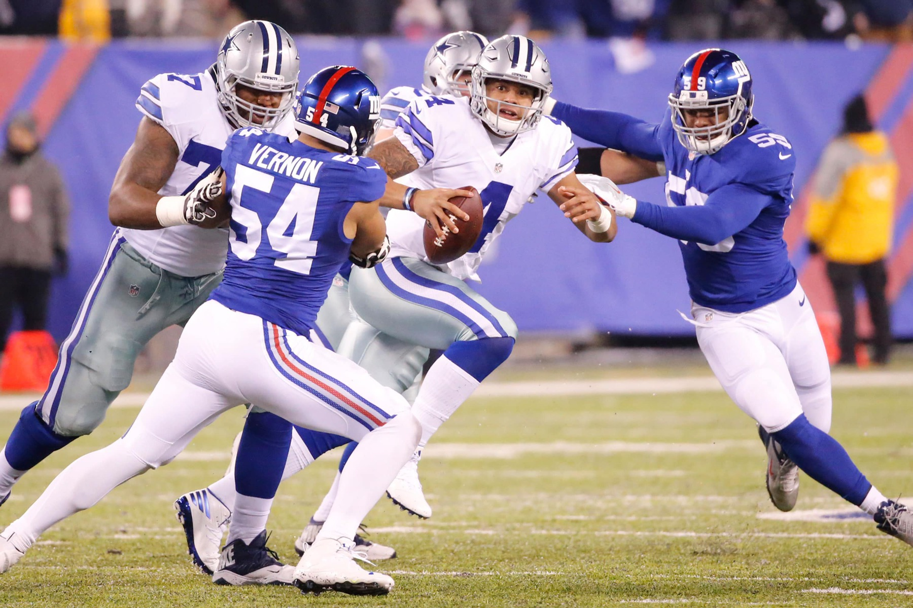
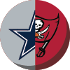

Cowboys Gameday: Week 15
Buccaneers at Cowboys
7:30 p.m. Weekday TV: Ch. 5
Radio: KRLD-FM (105.3), KMVK-FM (107.5, Spanish)
Line: Cowboys by 7
A win would mean ...
The Cowboys can clinch the NFC East if the New York Giants also tie or lose to the Detroit Lions. The freak-out over last Sunday's loss to the Giants subsides quickly.
A loss would mean ...
The severity of the Cowboys' slump as the postseason nears will be judged more harshly. QB debate likely continues.
Advertisement
SportsDay’s Picks
Dak Prescott suffered through his worst game of the season against New York last week, throwing for 165 yards and two interceptions on 17-for-37 passing. (Louis DeLuca/Staff Photographer)

Brandon George: The Cowboys are destined for their first losing streak of the season because their owner can’t bite his tongue. Jerry Jones continued to throw gasoline on the club’s quarterback debate last week, not backing down even after Troy Aikman criticized him. Dak Prescott is coming off his worst game of the season in a loss Sunday at the New York Giants. He’s shown an uncanny ability for a rookie to bounce back every time something hasn’t gone his way this season. But this time, against a Buccaneers team that has won five consecutive games and is led by a stout defense, Prescott could be in for another rough outing. Jones will again have a chance to stir the pot when it comes to the Cowboys’ quarterback debate. Buccaneers, 20-17

Kate Hairopoulos: Dak Prescott doesn’t hear all the chatter, he says. But what if the Buccaneers, who lead the league in takeaways, force an interception or fumble early Sunday night? Will he press to make up for it? Will he finally be fazed by the fact veteran Tony Romo sits on the bench, waiting for his chance to contribute this season? Most all Dak has done this season suggests otherwise, that he will plant his back foot to improve accuracy and find a way to reconnect with receiver Dez Bryant, and all will be merry and bright again in Cowboys Land. He should, calming worries as the postseason nears. Cowboys, 24-17

Jon Machota: As a rookie last year, Jameis Winston threw two interceptions and posted a 55.9 passer rating against the Cowboys. Winston and the Buccaneers still found a way to win, 10-6. The rematch will again be won by a rookie quarterback. Dak Prescott struggled last weekend against the New York Giants. Expect him to bounce back at AT&T Stadium. Tampa Bay’s defense has been very good during its five-game winning streak, but Prescott the runner could be the difference. After only one rushing attempt against New York, look for Prescott to use his feet more. Despite both efforts coming in losses, Russell Wilson rushed for 80 yards and Colin Kaepernick rushed for 84 against the Bucs this season. Cowboys, 20-17

David Moore: Can a Cowboys team that went 91 days between losses wind up saddled with a two-game losing streak when this one is over? Sure. The Buccaneers are playing better going into this game than the Cowboys. They are strong defensively. It’s unrealistic to expect the Dallas offense to snap out of its offensive lethargy immediately. But there is something working in the Cowboys’ favor that wasn’t necessarily in place in past seasons. Home-field advantage. The Cowboys have won five consecutive games at AT&T Stadium, averaging 29.2 points in the process. Only two of those victories have come by fewer than 10 points, and both were against division opponents. It won’t be easy, but the Cowboys should get back on the winning track Sunday night. Cowboys, 17-13

Tim Cowlishaw: Not quite matching the punting exchange of last week’s game, Zeke ignites the Cowboys offense and the Dallas D continues its own roll. Cowboys, 20-12.

Rick Gosselin: The Buccaneers have already posted huge upsets over the Chiefs and Seahawks. But those two teams have below-average running games. The Cowboys do not. They can and will run the ball. Cowboys, 24-14

Barry Horn: Now that the Cowboys have gotten their second loss out of their system, they rebound against a team that can't win six in a row. Dak silences the Romoantics who long for yesterday. For at least a week. Cowboys, 28-16

Kevin Sherrington: Dak keeps his job for another week, which only makes Jerry talk about Romo even more. Cowboys, 21-17
You make the call
We want to know who you who think will win this week’s Cowboys game. Enter your score below, and see which team other readers think will take home the “W.” Scores plotted on the lower-right of the chart indicate a predicted Cowboys victory, upper-left indicate a predicted opponent victory. (Note: Only scores below 60 will be shown.)
Who do you think will win? Enter the scores for each team, then click the "submit" button.
Thank you for your submission
You picked the to win, . Share your prediction on social media:
of readers are picking the to win this week by an average of points.
Cowboys:
:
Times predicted:
Advertisement
Bob Sturm’s scouting report
SituationEdgeIn the know
When the Cowboys run the ball
Edge
The Cowboys’ offensive line has certainly looked human for the last two weeks after bossing nearly every game for three months. Expectations are that the line will own a nasty disposition in this matchup. The Buccaneers are led by fantastic run-and-hit LB Lavonte David and big Gerald McCoy. The Cowboys must control the front and need better blocking from their tight ends.
When the Cowboys pass the ball
EdgeThe Cowboys were the second-best team in the NFL on third down through 10 games but dead last the last two weeks. The Buccaneers, meanwhile, have allowed fewer third-down conversions than any other team. With pressure building, Dak Prescott needs to trust the offense and not force the ball in one direction. Tampa Bay’s pass rush can certainly cause problems.
When the Buccaneers run the ball
Edge
In his seven games, RB Doug Martin has not had a single game of 4 yards per carry. The Buccaneers’ young offensive line doesn’t strike fear in opponents but has a few nice pieces, led by Ali Marpet at right guard. For the Cowboys, Sean Lee is at the top of his game with his destruction of plays that move laterally down the line.
When the Buccaneers pass the ball
EdgeThere are weeks when young Jameis Winston can dominate with his big arm; he has thrown for multiple touchdowns in seven games. But Winston, as he did at Florida State, will try to fire some passes into tight spots and throw some interceptions. Even so, with 6-5 Mike Evans as a huge weapon for the Bucs, the Cowboys will face the type of threat they haven’t seen since facing the Browns’ Terrelle Pryor, who did not have a QB to supply the throws. Bigger receivers have always given Dallas fits.
Special teams
Edge
In trying to fix their special teams, the Buccaneers used the widely mocked strategy of taking a kicker in the second round of the 2016 draft: Florida State’s Roberto Aguayo, who is ranked last in NFL field goal percentage. Adam Humpheries is having one of the best punt return seasons in the league. Dallas’ special teams have not generated any big returns but also have prevented any.
Intangibles
Edge
Tampa Bay has turned its season around with a five-game winning streak that includes a road victory over the Chiefs, followed by an equally rare hammering of the Seahawks. The Bucs have a stingy defense that will be physical and test the Cowboys. But Dallas feels urgency to secure the top seed in the NFC and to quiet its critics. Coming back home should be the difference.
Bob Sturm’s spotlight
Mike Evans is one of the most talented players in the NFL and a 6-5, 231-pound freak of nature. The Galveston product who spent two prolific seasons with Johnny Manziel at Texas A&M has seemingly dominated every level of football he has ever played.
In two seasons at College Station, Evans accumulated 2,499 receiving yards and 17 touchdowns for the Aggies, producing jaw-dropping highlights and magnificent moments throughout. Now, at age 23, he has produced three straight 1,000-yard seasons and totaling 25 touchdowns since becoming Tampa Bay’s first-round pick (seventh overall) in the 2014 NFL draft.
Evans can do it all as a receiver. He will not lose aerial battles and can run by defenders. He has worked hard to limit drops, which have been an issue, but his net contributions put him near the top at his position across the league, despite still being one of the youngest. The Cowboys secondary has seldom dealt with any receiver this size in 2016. This matchup will be vital.
Sturm’s prediction: The Cowboys look a bit wobbly, but I fully expect Dak Prescott to quiet his doubters with the kind of bounce-back performance he has given all year. Cowboys, 24-17
Brian Blanco/Getty Images
Advertisement
Top photo: Louis DeLuca
Read more from The Dallas Morning News
Chasing 1,808
Track Ezekiel Elliott’s progress throughout the season as he makes a run at Eric Dickerson’s NFL rookie rushing record.

Trappings of legend
While Jerry Jones doesn’t live in the past, an exclusive look inside the Cowboys owner’s office is a journey through the franchise’s history.

Ringing endorsement
For 12 seasons with the Dallas Cowboys, Darren Woodson would routinely wreak havoc on Sundays, then onnect with his best friend on Tuesdays.